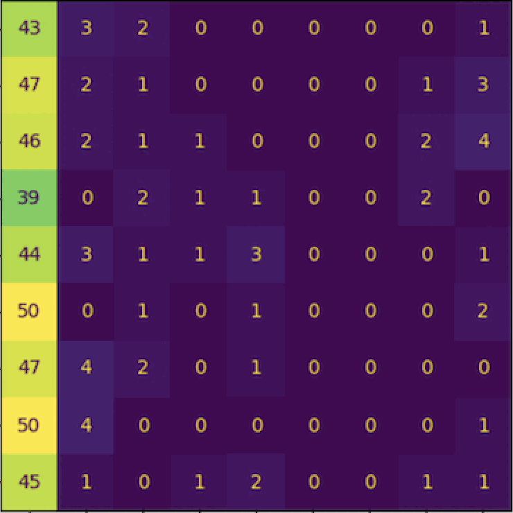

newest/featured

CountCLIP - [Re] Teaching CLIP to Count to Ten
Reproducibility study of the paper Teaching CLIP to Count to Ten, published by Google Research, in ICCV 2023.
Implementation of the paper from scratch and collected a specialized dataset to facilitate the training.
Further explorations and analysis of the paper were done, and we wrote a paper on our findings which is currently under review at ReScience C 2024.
VFormer
A modular PyTorch library for vision transformer models. Contains implementations of prominent ViT architectures broken down into modular components like encoder, attention mechanism, and decoder
Makes it easy to develop custom models by composing components of different architectures. Contains utilities for visualizing attention maps of models using techniques such as gradient rollout
KDLib
I conducted a reproducibility study of the paper Teaching CLIP to Count to Ten, published by Google Research, in ICCV 2023.
I implemented the paper from scratch and collected a specialized dataset to facilitate the training.
In addition to this, I carried out further explorations and analysis of the paper, and wrote a paper on my findings which is currently under review at TMLR 2024.